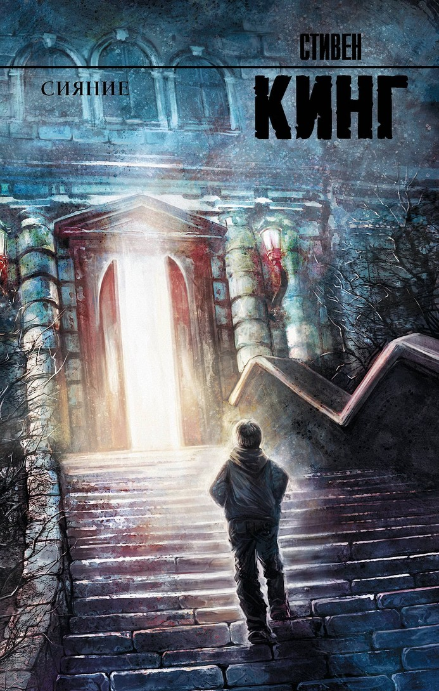
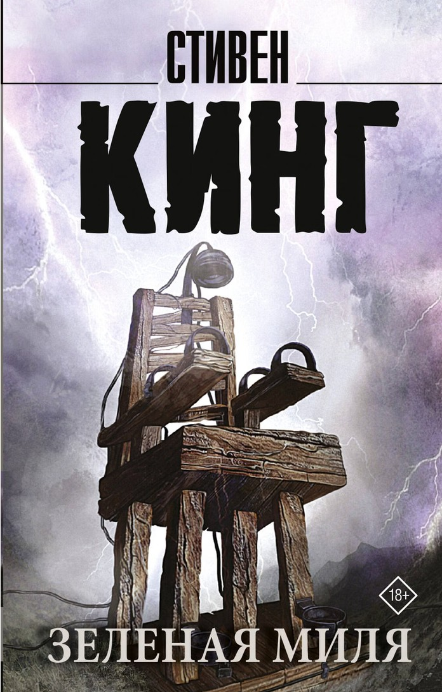
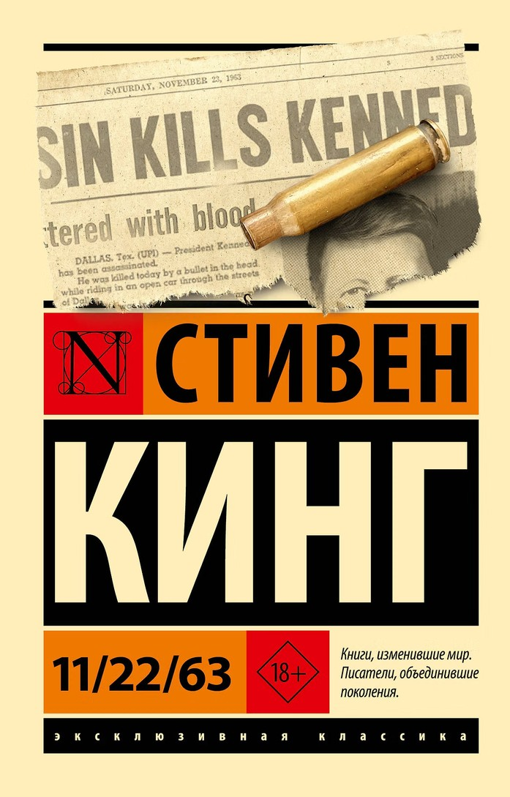
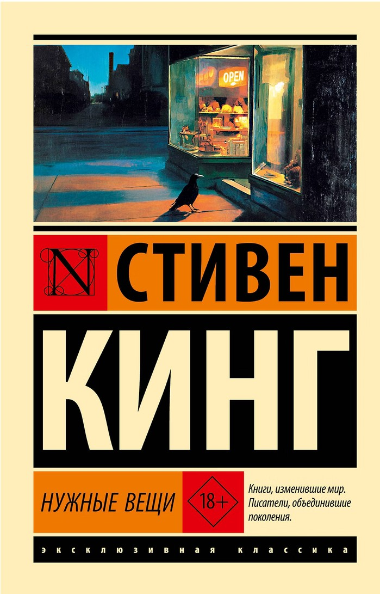
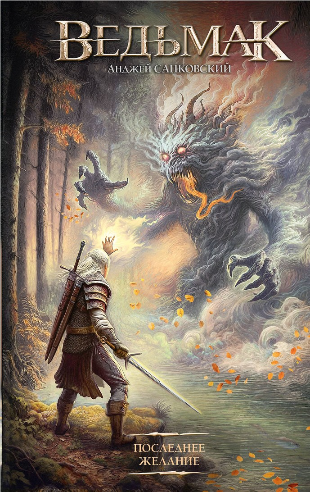
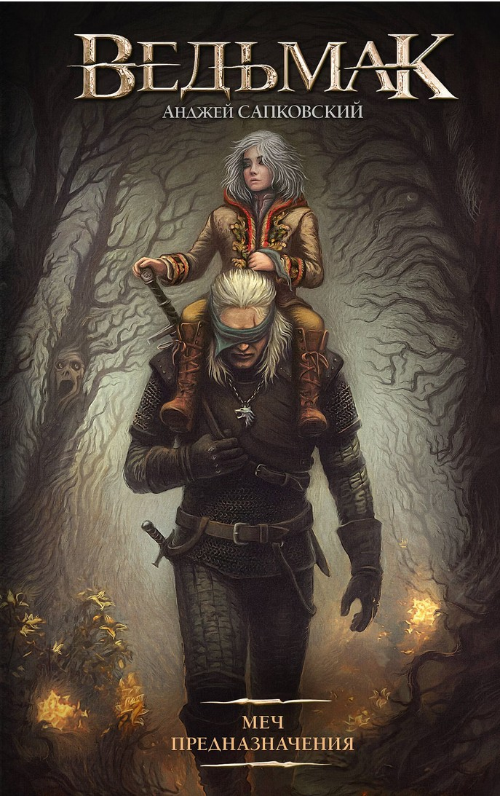
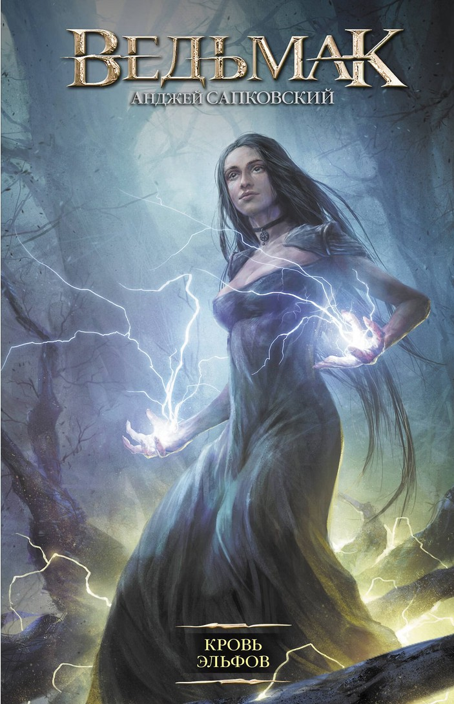
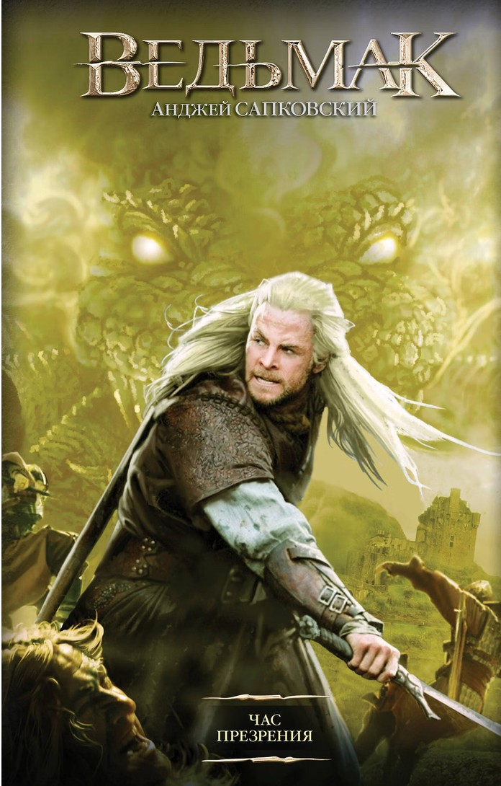

Сияние Джек Торранс устраивается смотрителем отеля «Оверлук», где его семье предстоит столкнуться с тёмными силами.
Зелёная миля История заключённого Джона Коффи и надзирателя Пола Эджкомба в тюремном блоке смертников.
11/22/63 Учитель получает возможность попасть в прошлое и пытается предотвратить убийство Джона Кеннеди.
Нужные вещи В небольшом городке открывается магазин, владелец которого исполняет желания покупателей за необычную плату.
Последнее желание Рассказы о ведьмаке Геральте, который охотится на чудовищ и сталкивается с непростым выбором.
Меч Предназначения Новые приключения Геральта, встречи с волшебными существами и размышления о судьбе.
Кровь эльфов После падения Цинтры Геральт защищает Цири, чьи способности привлекают внимание правителей и магов.
Ведьмак. Час Презрения Магические интриги и борьба за власть угрожают Цири, а война всё ближе.